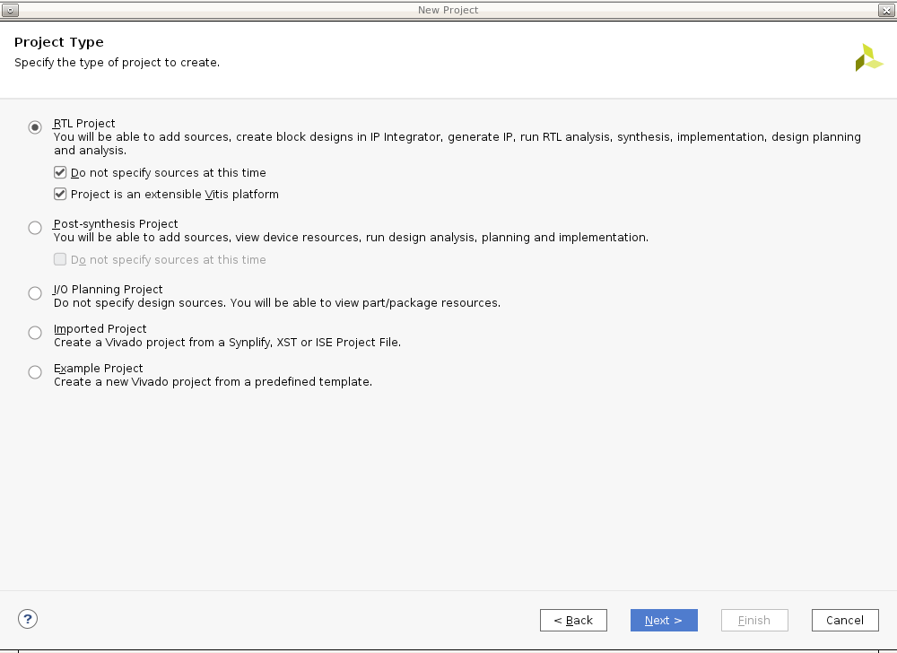

手順 1: ハードウェア プラットフォームの作成¶
この手順では、Vivado を使用して、ZCU104 Vitis アクセラレーション プラットフォームのハードウェア デザインを作成します。ZCU104 のプリセット デザインから開始し、プラットフォームに必要なペリフェラルを追加して設定します。すべてを設定したら、ハードウェア デザインを XSA にエクスポートします。
プリセットからのベース Vivado プロジェクトの作成¶
ワークスペースを作成するので、Vivado を起動します。
Linux コンソールで次のコマンド実行します。
source<Vivado_Install_Directory>/settings64.sh mkdir WorkSpace cd WorkSpace mkdir zcu104_hardware_platform #create directory for our step1 cd zcu104_hardware_platform vivado &
zcu104_custom_platform という Vivado プロジェクトを作成します。
[File] → [Project] → [New] をクリックし、[Next] をクリックします。
[Project Name] ページで [Project name] に「zcu104_custom_platform」と入力します。[Create project subdirectory] をオンにしたまま、[Next] をクリックします。
[Project is an extensible Vitis platform] をオンにします。[Next] をクリックします。

[Default Part] ページの [Boards] タブで [Zynq UltraScale+ ZCU104 Evaluation Board] を選択します。[Next] をクリックします。
プロジェクト サマリを確認し、[Finish] をクリックします。
注記: 既存の Vivado プロジェクトをエクステンシブル プラットフォーム プロジェクトに変更する必要がある場合は、開いている Vivado デザインの Flow Navigator で [Settings] をクリックし、[General] ページで [Project is an extensible Vitis platform] をオンにします。

ブロック デザインを作成します。
Flow Navigator で [IP INTEGRATOR] → [Create Block Design] をクリックします。
(オプション) デザイン名を system に変更します。
[OK] をクリックします。
MPSoC IP を追加し、ブロック オートメーションを実行して設定します。
[Diagram] ウィンドウを右クリックし、[Add IP] をクリックします。
zynqを検索し、IP の検索結果から [Zynq UltraScale+ MPSoC] をダブルクリックします。[Run Block Automation] リンクをクリックしてボード プリセットを適用します。[Run Block Automation] ダイアログ ボックスで次がオンになっていることを確認します。
[All Automation]
[zynq_ultra_ps_e_0]
[Apply Board Presets]
[OK] をクリックします。MPSoC ブロックは次のようになります。

ここまでの結果
Zynq UltraScale+ MPSoC ブロックを追加し、Vivado のブロック オートメーションを使用して ZCU104 のボード プリセットを適用しました。プリセットには、MPSoC PS 側のブロックの設定およびピンの割り当てが含まれています。
カスタム ボードの場合の操作
カスタム ボードの場合は、MPSoC ブロックをダブルクリックして、ボードのハードウェアに応じてパラメーターを設定します。次に、IP ブロックとメタデータを追加して、アクセラレーション カーネルをサポートするベース ハードウェア デザインを作成します。
システム デザインのクロックおよびリセットのカスタマイズ¶
v++リンカーを使用すると、カーネルとプラットフォームの間のクロック信号を自動的にリンクできます。プラットフォームで使用可能なクロック信号は、PFM.CLK プロパティでエクスポートされます。
単純なデザインでは、割込み信号はプロセッサの pl_clk で供給できます。ただし、プロセッサには最大 4 つの pl_clk しかなく、それらの位相は揃っていません。
より多くの割り込み信号を供給、または位相を揃えたクロックを供給するには、Clocking Wizard を使用します。
ブロック図に Clocking Wizard を追加して、プラットフォームのクロック信号をイネーブルにします。詳しい手順は次のとおりです。
Clocking Wizard ブロックを追加し、3 つのクロックを生成するよう設定します。
[Diagram] ウィンドウを右クリックし、[Add IP] をクリックします。
IP の検索ボックスで Clocking Wizard を検索して追加します。
clk_wiz_0 IP ブロックをダブルクリックして [Re-Customize IP] ダイアログ ボックスを開きます。
[Output Clocks] タグをクリックします。
[Output Clock] 列の [clk_out1] から [clk_out3] までのチェック ボックスをオンにします。[Output Freq] の [Requested] を次のように設定します。
[clk_out1] を [100] MHz に設定します。
[clk_out2] を [200] MHz に設定します。
[clk_out3] を [400] MHz に設定します。
ダイアログ ボックスの下部にある [Reset Type] で [Active Low] をオンにします。

[OK] をクリックしてダイアログ ボックスを閉じます。
注記: これで、デザインのクロック システムを設定できました。Clocking Wizard では、pl_clk が入力クロックとして使用され、ロジック デザイン全体に必要なクロックが生成されます。この単純なデザインでは、100 MHz クロックが axi_lite の制御バス クロックとして使用されます。200 MHz および 400 MHz のクロックは、デザインのリンク段階で DPU AXI インターフェイス クロックおよび DPU コア クロックとして使用されます。作成するデザインに合わせて、クロックの数および周波数を自由に変更できます。クロックのエクスポートは後で設定します。その前に、各クロックのリセット信号を作成する必要があります。リセット信号は、クロックのエクスポート設定で必要です。
これらの 3 つのクロックに対応する 3 つの Processor System Reset ブロックを追加します。
[Diagram] ウィンドウを右クリックし、[Add IP] をクリックします。
IP の検索ダイアログ ボックスで Processor System Reset を検索して追加します。
リセット モジュールとクロック信号の関係がわかりやすいように、リセット ブロックの名前を proc_sys_reset_1 に変更します。
proc_sys_reset_1 ブロックを選択し、Ctrl + C キーを押してから Ctrl + V キーを押し、モジュールを 2 つ複製します。これらのブロックには、デフォルトで proc_sys_reset_2 および proc_sys_reset_3 という名前が付けられます。
クロックとリセットを接続します。
[Run Connection Automation] をクリックします。開いたダイアログ ボックスで、proc_sys_reset ブロックを Clocking Wizard のクロック出力に接続するよう設定します。
[Run Connection Automation] ダイアログ ボックスの左側で [All Automation] をオンにします。
clk_wiz_0 の [clk_in1] を選択し、[Clock Source] を [/zynq_ultra_ps_e_0/pl_clk0] に設定します。
各 proc_sys_reset インスタンスの slowest_sync_clk を選択し、[Clock Source] を次のように設定します。
proc_sys_reset_1 には [/clk_wiz_0/clk_out1]
proc_sys_reset_2 には [/clk_wiz_0/clk_out2]
proc_sys_reset_3 には [/clk_wiz_0/clk_out3]
各 proc_sys_reset インスタンスの [ext_reset_in] を選択し、[Board Part Interface] を [Custom]、[Select Manual Source] を [/zynq_ultra_ps_e_0/pl_resetn0] に設定します。
すべてのチェック ボックスがオンになっていることを確認し、[OK] をクリックしてダイアログ ボックスを閉じ、接続を作成します。
各 proc_sys_reset インスタンスの dcm_locked 信号をすべて clk_wiz_0 の locked 信号に接続します。
プラットフォームのクロックをイネーブルにします。
[Platform Setup] ウィンドウをクリックします。
このウィンドウが開いていない場合は、[Window] → [Platform Setup] をクリックします。
[Clock] を選択します。
[clk_wiz_0] の下のすべてのクロック ([clk_out1]、[clk_out2]、[clk_out3]) をオンにします。
これらのクロックの ID を 0、1、および 2 に変更します。
[Is Default] 列で [clk_out2] をオンにします。
これらすべてを設定すると、右下のボックスに「Info: No problem with Clock interface」と表示され、問題がないことが示されます。
注記:
プラットフォームには、デフォルト クロックが 1 つのみ必要です。リンク コンフィギュレーションにユーザー割り当てがない場合、v++ リンカーがデフォルト クロックを使用して IP ブロックを接続します。
割り込みサポートの追加¶
v++リンカーを使用すると、カーネルとプラットフォームの間の割り込み信号を自動的にリンクできます。プラットフォームで使用可能な割り込み信号は、PFM.IRQ プロパティでエクスポートされます。
単純なデザインでは、割り込み信号はプロセッサの pl_ps_irq で供給できます。ただし、供給できる割り込み信号は 16 個までです。より多くの割り込み信号を供給するには、AXI Interrupt Controller を使用できます。AXI Interrupt Controller を制御する AXI HPM0 LPD をイネーブルにします。次に AXI Interrupt Controller を追加して、PFM.IRQ の割り込み信号をイネーブルにします。詳しい手順は次のとおりです。
AXI Interrupt Controller を制御する AXI HPM0 LPD をイネーブルにします。
ブロック図で Zynq UltraScale+ MPSoC ブロックをダブルクリックします。
[PS-PL Configuration] → [PS-PL Interfaces] → [Master Interface] をクリックします。
[AXI HPM0 LPD] をオンにします。
[AXI HPM0 LPD] を展開します。[AXI HPM0 LPD Data width] がデフォルトの 32 であることを確認します。
[AXI HPM0 FPD] および [AXI HPM1 FPD] をオフにします。
[OK] をクリックして設定を終了します。
注記:
AXI HPM0 LPD は、主に制御用に使用します。この場合、32 ビット制御レジスタが読み出し/書き込みされます。インターフェイスが 32 を超える場合、AXI Interconnect または SmartConnect が PL ロジックを使用して AXI バス幅を変換します。これにより、ロジック リソースのコストが増え、不要なレイテンシが発生する可能性があります。
AXI HPM0 FPD および AXI HPM1 FPD は、カーネルで使用するために予約します。ブロック図からこれらをディスエーブルにしておくと、誤って自動接続されることがなくなります。未使用の AXI インターフェイスは、ブロック図に表示されているかどうかに関係なく、[Platform Setup] でエクスポートできます。
AXI Interrupt Controller を追加して設定します。
[Diagram] ウィンドウを右クリックして [Add IP] をクリックし、AXI Interrupt Controller IP を追加します。axi_intc_0 としてインスタンシエートされます。
AXI Interrupt Controller ブロックをダブルクリックし、[Interrupt Output Connection] を [Single] に変更します。
[OK] をクリックします。
axi_intc_0 の AXI インターフェイスを PS の AXI HPM0 LPD に接続します。
[Run Connection Automation] をクリックします。
設定を確認します。[axi_intc_0] がオン、[s_axi] は /zynq_ultra_ps_e_0/M_AXI_HPM0_LPD に接続されます。
[Clock source for Slave interface] および [Clock source for Master interface] を [/clk_wiz_0/clk_out2 (200 MHz)] に設定します。
[OK] をクリックします。
注記:
割り込みコントローラーとほとんどのカーネル IRQ 信号を 1 クロックに同期させるようにします。これが安定性のためベストです。カーネルが異なるクロックで動作している場合は、非同期 IRQ を心配する必要はありません。割り込みコントローラーでは、レベル割り込み信号を使用して非同期 IRQ も処理できます。
割り込みコントローラーの irq を接続します。
axi_intc_0.irq を zynq_ultra_ps_e_0.pl_ps_irq[0:0] に接続します。
注記:
PS の pl_ps_irq に接続する irq 信号が複数ある場合は、concat IP を使用してそれらをバスに連結し、そのバスを pl_ps_irq に接続します。
プラットフォームの割り込み信号をイネーブルにします。
[Platform Setup] ウィンドウをクリックします。
[Interrupt] を選択します。
[axi_intc_0] の下の [intr] をオンにします。
[Tcl Console] ウィンドウにこの設定に対応する Tcl コマンドが表示されます。
set_property PFM.IRQ {intr { id 0 range 32 }} [get_bd_cells /axi_intc_0]
IP インテグレーター デザインの接続は次のようになります。
プラットフォームでの AXI インターフェイスのイネーブル¶
PS から AXI マスター インターフェイスをイネーブルにします。
[Platform Setup] ウィンドウをクリックします。
[AXI Port] を選択します。
[zynq_ultra_ps_e_0] の下で [M_AXI_HPM0_FPD] および [M_AXI_HPM1_FPD] をオンにします。[Memport] 列はデフォルトの [M_AXI_GP]、[SP Tag] 列は空のままにします。
注記:
M_AXI_GP は、汎用 AXI マスター インターフェイスです。
SP タグは、AXI スレーブ インターフェイスにのみ適用されます。
v++ リンカーにより AXI Interconnect が自動的にインスタンシエートされ、PS の AXI マスター インターフェイスとアクセラレーション カーネルのスレーブ インターフェイス間が接続されます。1 つの AXI マスター インターフェイスは、最大 16 個のカーネルに接続できます。
AXI Interconnect で AXI マスター インターフェイスをイネーブルにします。
[ps8_0_axi_periph] の下で、[M01_AXI] を選択して Shift キーを押しながら [M07_AXI] をクリックし、[M01_AXI] から [M07_AXI] までのマスター インターフェイスを選択します。
選択項目を右クリックし、[Enable] をクリックします。
[Memport] 列はデフォルトの [M_AXI_GP]、[SP Tag] 列は空のままにします。
注記:
AXI マスター インターフェイスが AXI Interconnect IP からエクスポートされている場合は、v++ では AXI Interconnect の別の段がカスケード接続されることはありません。
PS の AXI マスター インターフェイスと AXI Interconnect は、プラットフォームにとっては機能的に同等です。
通常は、プラットフォーム設計者は必要な数の AXI インターフェイスをプラットフォームにエクスポートする必要があります。使用するインターフェイスは、アプリケーション開発者が決定する必要があります。
PS から AXI スレーブ インターフェイスをイネーブルにし、カーネルが DDR メモリにアクセスできるようにします。
[zynq_ultra_ps_e_0] の下で、Ctrl キーを押しながら [S_AXI_HPC0_FPD]、[S_AXI_HPC1_FPD]、[S_AXI_HP0_FPD]、[S_AXI_HP1_FPD]、[S_AXI_HP2_FPD]、[S_AXI_HP3_FPD] をクリックします。
選択項目を右クリックし、[Enable] をクリックします。
[S_AXI_HPC0_FPD] および [S_AXI_HPC1_FPD] の [Memport] を [S_AXI_HP] に変更します。これらのインターフェイスのコヒーレンシ機能は使用しません。
リンク段階で v++ により選択できるように、[SP Tag] に HPC0、HPC1、HP0、HP1、HP2、HP3 を入力します。
エミュレーション設定 (オプション)¶
この手順は、エミュレーション可能なプラットフォームを作成する場合にのみ必要です。
コンポーネントに複数のタイプのシミュレーション モデルがある場合、SystemC TLM (トランザクション レベル モデリング) モデルを選択すると、RTL モデルよりもかなり高速に実行されます。Processing System コンポーネントでは、ハードウェア エミュレーションに TLM を使用する必要があります。
PS シミュレーション モデルを tlm に変更します
ブロック図で PS インスタンス zynq_ultra_ps_e_0 を選択します
[Block Properties] ウィンドウを確認します。
[Properties] ビューに
ALLOWED_SIM_MODELS=tlm,rtlが表示されます。これは、このコンポーネントで 2 つのタイプのシミュレーション モデルがサポートされるということです。SELECTED_SIM_MODELプロパティまでスクロールします。[rtl] を [tlm] に変更し、TLM モデルが使用されるようにします。[Tcl Console] ウィンドウに対応する Tcl コマンドが表示されます。
set_property SELECTED_SIM_MODEL tlm [get_bd_cells /zynq_ultra_ps_e_0]
ハードウェア XSA のエクスポート¶
ブロック デザインを検証します。
[Diagram] ウィンドウで [Validate Design] ボタンをクリックします。
注記: 検証中、Vivado から /axi_intc_0/intr が接続されていないというクリティカル警告が表示されます。v++ リンカーによりカーネルの割り込み信号がこの intr 信号に接続されるので、この警告は無視しても問題ありません。
CRITICAL WARNING: [BD 41-759] The input pins (listed below) are either not connected or do not have a source port, and they don't have a tie-off specified. These pins are tied-off to all 0's to avoid error in Implementation flow. Please check your design and connect them as needed: /axi_intc_0/intr
ブロック デザインの最上位ラッパーを作成します。
[Sources] ウィンドウで、[Design Sources] フォルダーに含まれる [system.bd] を右クリックします。
[Create HDL Wrappe] をクリックします。
[Let Vivado manage wrapper and auto-update] をオンにします。
[OK] をクリックしてブロック デザインのラッパーを生成します。
合成前のデザインを生成します。
Flow Navigator で [Generate Block Design] をクリックします。
[Synthesis Options] で [Global] をオンにします。これにより、生成中の IP 合成がスキップされます。
[Generate] をクリックします。.
[Generate Bitstream] (オプション)
この手順は、Vitis プラットフォームではオプションです。ほとんどの場合、フラット (DFX 以外の) Vitis プラットフォームでは、プラットフォームをエクスポートする前にビットストリームを生成する必要はありません。この手順は、その利点と要件を理解した後で実行できます。
ビットストリームを生成すると、プラットフォームのハードウェア デザインのインプリメンテーションまで実行されます。プラットフォーム ハードウェア デザインに検証済みデザイン DRC でレポートできないエラーがある場合、初期段階でエラーをレポートできます。
次は、ビットストリーム生成の手順です。
ナビゲーション ウィンドウで [Generate Bitstream] をクリックします。
[Launch runs on local host] でジョブ数を選択します。
[OK] をクリックして ビルドを開始します。
プラットフォームをエクスポートします。
この手順では、ハードウェア デザインとハードウェア エミュレーション用に XSA を別々にエクスポートします。これらの XSA ファイルは、手順 2 で使用します。
注記: Vivado 2022.1 では、ハードウェアとハードウェア エミュレーション情報をどちらも含めて XSA をエクスポートできます。この機能は、今後廃止される予定です。ほとんどの実際のデザインでは、デザインの複雑さにより、ペリフェラルの中にエミュレーションできないものがあったり、サイクル精度レベルでエミュレーションする必要のないものもあります。通常は、ハードウェア エミュレーション用に簡素化したハードウェア デザインを提供して、エミュレーション実行時間を削減します。
[File] → [Export] → [Export Platform] をクリックし、[Export Hardware Platform] ウィザードを起動します。このウィザードは、Flow Navigator または [Platform Setup] ウィンドウの [Export Platform] ボタンをクリックして起動することもできます。
最初の情報ページで [Next] をクリックします。
[Platform Type] に [Hardware] を選択して、[Next] をクリックします。前のエミュレーション設定手順をスキップした場合は、[Hardware] をオンにします。
[Platform State] に [Pre-synthesis] を選択します。
(オプション) 手順 4 でビットストリームを生成した場合は、[Include bitstream] をオンにし、[Next] をクリックします。
[Platform Properties] ページでプラットフォーム プロパティを指定し、[Next] をクリックします。次に例を示します。
[Name]: zcu104_custom_platform
[Vendor]: xilinx
[Board]: zcu104
[Version]: 0.0
[Description]: This platform provides high PS DDR bandwidth and three clocks: 100 MHz, 200 MHz and 400 MHz.
[XSA file name] に「zcu104_custom_platform_hw」と入力し、[Export to] はデフォルトのエクスポート ディレクトリのままにします。
[Finish] をクリックします。
zcu104_custom_platform_hw.xsa が生成されます。[Tcl Console] ウィンドウにエクスポート パスが表示されます。
(オプション: ハードウェア エミュレーションの場合のみです。前の手順でエミュレーション設定を飛ばした場合は、次の手順を省略してください)
Export Platform ウィザードを再度実行し、ハードウェア エミュレーション用の XSA をエクスポートします。
注記: この単純なプロジェクトでは、同じハードウェアおよびハードウェア エミュレーション デザインを使用しましたが、ハードウェアおよびハードウェア エミュレーションに異なる Vivado デザインを使用することもできます。プラットフォーム開発者は、2 つのデザインを論理的に同一に保つ必要があります。そうしないと、エミュレーション結果がハードウェア デザインを反映できません。
[File] → [Export] → [Export Platform] をクリックし、[Export Hardware Platform] ウィザードを起動します。このウィザードは、Flow Navigator または [Platform Setup] ウィンドウの [Export Platform] ボタンをクリックして起動することもできます。
最初の情報ページで [Next] をクリックします。
[Platform Type] に [Hardware Emulation] を選択して、[Next] をクリックします。
[Platform State] ページで [Pre-synthesis] をオンにし、[Next] をクリックします。
[Platform Properties] ページでプラットフォーム プロパティを指定し、[Next] をクリックします。次に例を示します。
[Name]: zcu104_custom_platform
[Vendor]: xilinx
[Board]: zcu104
[Version]: 0.0
[Description]: This platform provides high PS DDR bandwidth and three clocks: 100 MHz, 200 MHz and 400 MHz.
[XSA file name] に「zcu104_custom_platform_hwemu」と入力し、[Export to] はデフォルトのエクスポート ディレクトリのままにします。
[Finish] をクリックします。
zcu104_custom_platform_hwemu.xsa が生成されます。[Tcl Console] ウィンドウにエクスポート パスが表示されます。
上記のエクスポートは、Tcl スクリプトで実行することもできます。
# Setting platform properties set_property platform.default_output_type "sd_card" [current_project] set_property platform.design_intent.embedded "true" [current_project] set_property platform.design_intent.server_managed "false" [current_project] set_property platform.design_intent.external_host "false" [current_project] set_property platform.design_intent.datacenter "false" [current_project] # Write pre-synthesis expandable XSA write_hw_platform -hw -force -file ./zcu104_custom_platform_hw.xsa write_hw_platform -hw_emu -force -file ./zcu104_custom_platform_hwemu.xsa
ファースト トラック¶
プロジェクトを再作成し、出力を生成するスクリプトが提供されています。これらのスクリプトを使用するには、次の手順を実行します。
ビルドを実行します。
# cd to the step directory, e.g. cd step1_vivado make
生成されたファイルをクリーンアップするには、次を実行します。
make clean